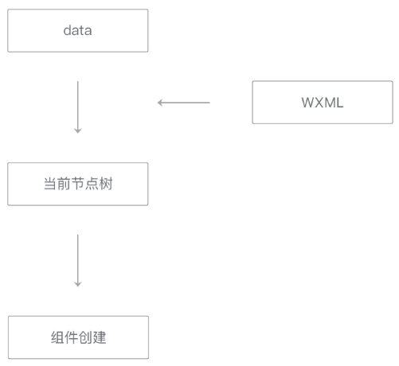

初始渲染发生在页面刚刚创建时。
初始渲染时，将初始数据套用在对应的WXML片段上生成节点树。
节点树也就是在开发者工具WXML面板中看到的页面树结构，它包含页面内所有组件节点的名称、属性值和事件回调函数等信息。最后根据节点树包含的各个节点，在界面上依次创建出各个组件。

图7-7 视图层初始渲染流程图
在这整个流程中，时间开销大体上与节点树中节点的总量成正比例关系。因而减少WXML中节点的数量可以有效降低初始渲染和重渲染的时间开销，提升渲染性能。
代码清单7-4 简化WXML代码的例子
<view data-my-data="{{myData}}"> <!-- 这个 view 和下一行的 view 可以合并 -->
<view class="my-class" data-my-data="{{myData}}" bindtap="onTap">
<text> <!-- 这个 text 通常是没必要的 -->
{{myText}}
</text>
</view>
</view>
<!-- 可以简化为 -->
<view class="my-class" data-my-data="{{myData}}" bindtap="onTap">
{{myText}}
</view>